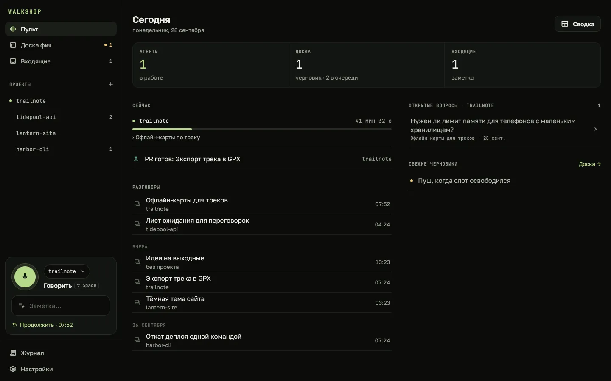
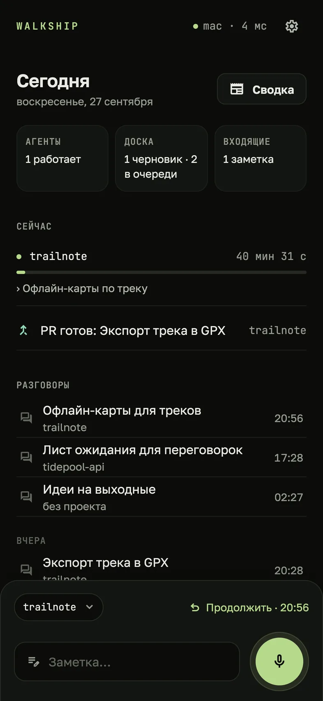
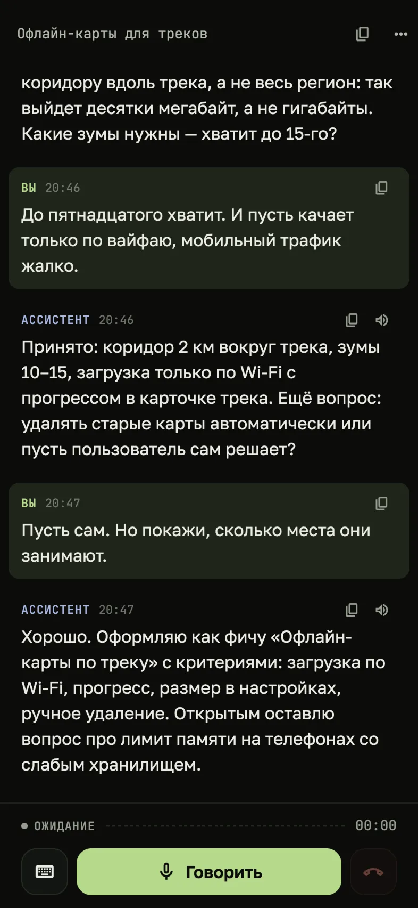
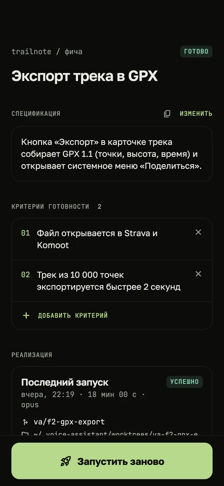
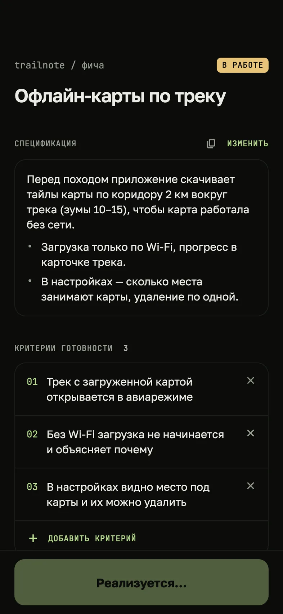
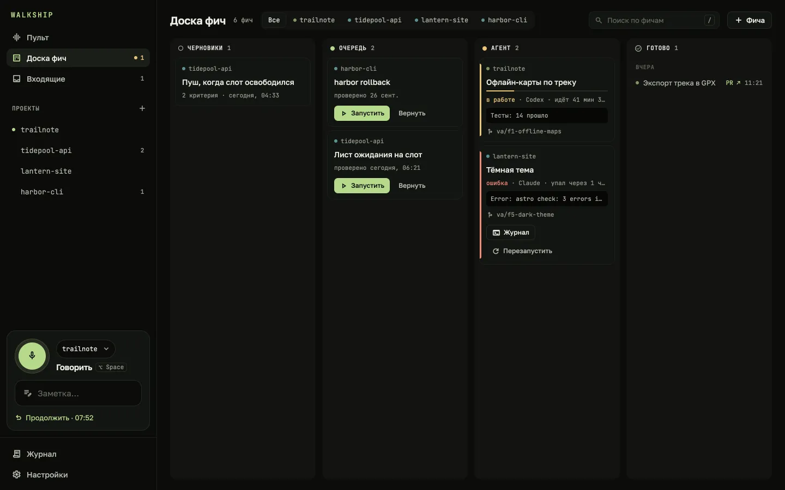
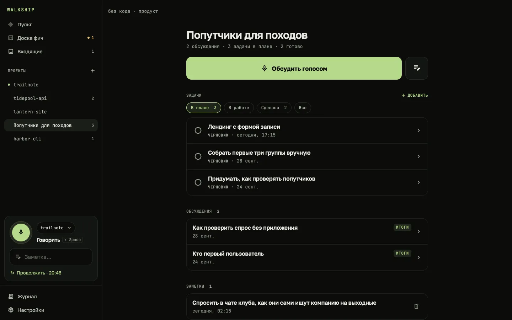
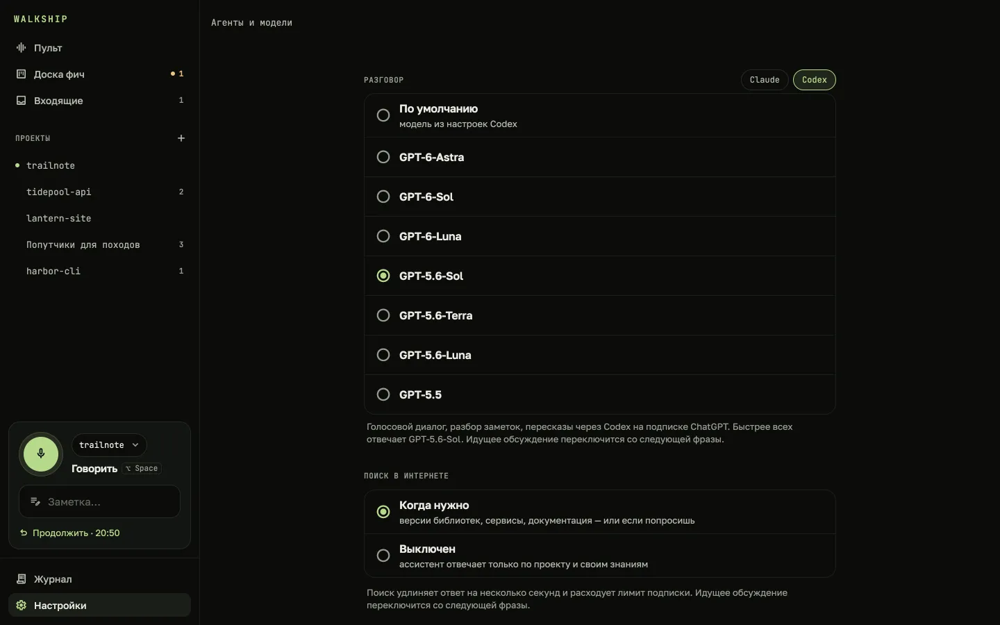
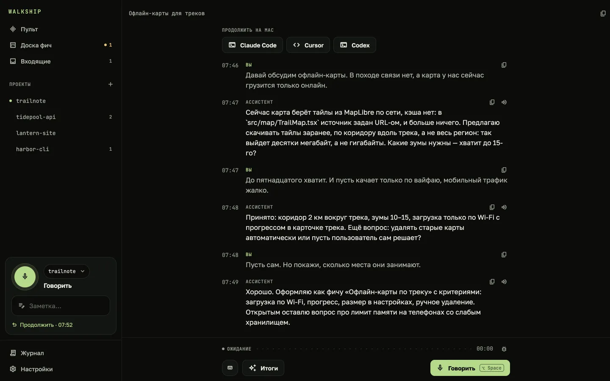

Быстрые заметки
Мысль на ходу без разговора. Ассистент сам решает, к какому проекту она относится, а если не уверен — спросит.
Голосовой партнёр для твоих проектов
Обсуждаешь фичу или новую идею голосом на прогулке. Walkship собирает из разговора спецификацию, а твой агент — Claude Code или Codex — реализует её на твоём Mac.
Бета · Mac с Apple Silicon, macOS 14+ · нужен Claude Code или Codex


Как это работает
На прогулке
Приложение Walkship: говоришь, слушаешь, получаешь пуш, когда работа готова
Дома
Walkship · всё хранится здесь
В облаке
Твоя подписка: модели для разговора и кода под твоим логином
Проверки пройдены. Откроется по твоей команде.
Серверов Walkship и аккаунтов нет.

Hands-free: говоришь, после паузы фраза уходит ассистенту, ответ звучит сразу, потом он снова слушает. Ассистент знает проект: читает код, историю git и заметки, помнит прошлые обсуждения.

Скажи «оформляй» — разговор превращается в решения, открытые вопросы и фичи со спецификацией и критериями готовности.

Одно нажатие — Claude Code или Codex реализует фичу в отдельном git worktree, прогоняет проверки и коммитит. Пуш на телефон, пересказ голосом, «открывай» — и PR готов.

До кода
Продукт часто начинается с разговора — задолго до репозитория. Walkship ведёт его от первой прогулки до первого PR.

Возможности
Мысль на ходу без разговора. Ассистент сам решает, к какому проекту она относится, а если не уверен — спросит.
Все фичи всех проектов: черновики, очередь, агент в работе, готово. Запуск и перезапуск прямо с карточки.
«Что мы решали про настройки?» — ассистент найдёт ответ в прошлых обсуждениях любого проекта.
Одна кнопка — и голосом: что агенты закончили, где упали, какие PR ждут, какие вопросы открыты.
«Покажи, как будет выглядеть экран» — набросок прямо в разговоре и в спецификации фичи.
Спецификация или расшифровка открывается в Claude Code, Cursor или Codex одним нажатием.
Claude Code, Cursor и Codex в репозитории видят идеи, решения и фичи проекта.
Подключи Jira, Sentry или базу данных — ассистент будет пользоваться ими в разговоре.
Сказанная фраза ждёт на телефоне и уходит сама, когда Mac вернётся. А можно продолжить разговор через модель по своему ключу — потом всё переедет на Mac.
Claude или Codex

Приватность

Требования
При первом запуске приложение само всё настроит: вход в Claude Code или Codex, голосовой пакет и QR-код для телефона.
Открыл страницу на Mac? Наведи сюда камеру телефона на Android, чтобы скачать на него APK.Все версии и что в них нового →
Обновления на Android: добавь Walkship в Obtainium →
gh (GitHub CLI)Вопросы
С Mac — нет: всё идёт через Claude Code или Codex по твоей подписке Claude или ChatGPT. Ключ нужен, только чтобы говорить с телефона, пока Mac недоступен, — для DeepSeek или любого API в стиле OpenAI.
Да, для всего: в «Настройки → Агенты и модели» у разговора, итогов и реализации свой выбор — Claude или Codex и модель. Если у одной подписки кончится лимит, ассистент предложит продолжить на другой.
Только агентам, которыми ты пользуешься, — Claude Code или Codex — так же, как если бы ты запускал их сам. Когда говоришь с телефона без Mac, то, что читает ассистент, уходит в модель, которую ты настроил со своим ключом. У Walkship нет своего сервера в облаке.
Телефон предложит продолжить через твою модель. Он помнит, что Mac знал о проекте, — прошлые итоги, фичи, заметки — и читает код с GitHub, если ты вошёл. Когда Mac вернётся, всё сказанное переедет на него, а фича, которую ты попросил реализовать, запустится там.
Да, она скоро появится в App Store. Android уже есть — APK на странице загрузки, а на Mac можно говорить прямо в приложении.
Он работает в отдельном git worktree на своей ветке. Основная ветка остаётся как была, а PR открывается только по твоей команде.
На русском и английском. Одна настройка переключает экраны, ассистента и голос — и на Mac, и на телефоне.
Приложение на Mac само проверяет новые версии и предлагает скачать их из строки меню. Данные остаются на месте. На Android добавь Walkship в Obtainium — оно будет ставить новые APK из релизов на GitHub, как только они выходят.